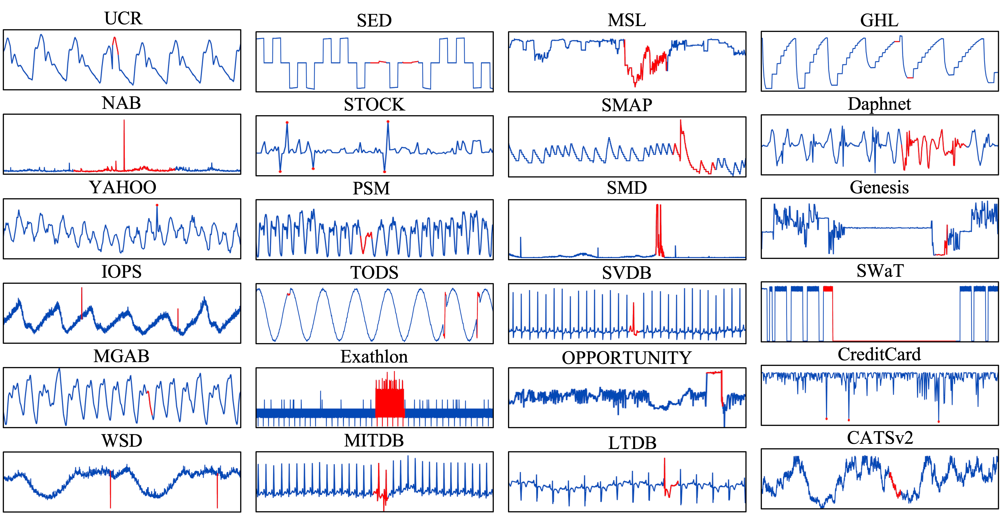

Time-series anomaly detection is a fundamental task across scientific fields and industries. However, the field has long faced the ''🐘 elephant in the room:'' critical issues including flawed datasets, biased evaluation measures, and inconsistent benchmarking practices that have remained largely ignored and unaddressed. We introduce the TSB-AD to systematically tackle these issues in the following three aspects: (i) Dataset Integrity: with 1070 high-quality time series from a diverse collection of 40 datasets (doubling the size of the largest collection and four times the number of existing curated datasets), we provide the first large-scale, heterogeneous, meticulously curated dataset that combines the effort of human perception and model interpretation; (ii) Measure Reliability: by revealing issues and biases in evaluation measures, we identify the most reliable and accurate measure, namely, VUS-PR for anomaly detection in time series to address concerns from the community; and (iii) Comprehensive Benchmarking: with a broad spectrum of 40 detection algorithms, from statistical methods to the latest foundation models, we perform a comprehensive evaluation that includes a thorough hyperparameter tuning and a unified setup for a fair and reproducible comparison. Our findings challenge the conventional wisdom regarding the superiority of advanced neural network architectures, revealing that simpler architectures and statistical methods often yield better performance. The promising performance of neural networks on multivariate cases and foundation models on point anomalies highlights the need for further advancements in these methods.
| Dataset | Description | Data Source | License |
|---|---|---|---|
| UCR | A collection of univariate time series of multiple domains, including air temperature, arterial blood pressure, astronomy, ECG, and more. Most anomalies are introduced artificially. | Website | None |
| NAB | Labeled real-world and artificial time series, including AWS server metrics, online advertisement click rates, real-time traffic data, and Twitter mentions of publicly traded companies. | Website | GPL |
| YAHOO | A dataset published by Yahoo Labs, consisting of real and synthetic time series based on production traffic to Yahoo systems. | Website | See details in Website |
| IOPS | A dataset with performance indicators reflecting the scale, quality of web services, and machine health status. | Website | None |
| MGAB | Mackey-Glass time series, where anomalies exhibit chaotic behavior that is challenging for the human eye to distinguish. | Website | CC0-1.0 |
| WSD | is a web service dataset, which contains real-world KPIs collected from large Internet companies. | Website | None |
| SED | a simulated engine disk data from the NASA Rotary Dynamics Laboratory representing disk revolutions recorded over several runs (3K rpm speed). | Website | None |
| TODS | is a synthetic dataset that comprises global, contextual, shapelet, seasonal, and trend anomalies. | Website | Apache-2.0 |
| NEK | is collected from real production network equipment. | Website | None |
| Stock | is a stock trading traces dataset, containing one million transaction records throughout the trading hours of a day. | Website | None |
| Power | power consumption for a Dutch research facility for the entire year of 1997. | Website | None |
| GHL | contains the status of 3 reservoirs such as the temperature and level. Anomalies indicate changes in max temperature or pump frequency. | Website | None |
| Daphnet | contains the annotated readings of 3 acceleration sensors at the hip and leg of Parkinson's disease patients that experience freezing of gait (FoG) during walking tasks. | Website | CC BY 4.0 |
| Exathlon | is based on real data traces collected from a Spark cluster over 2.5 months. For each of these anomalies, ground truth labels are provided for both the root cause interval and the corresponding effect interval. | Website | Apache-2.0 |
| Genesis | is a portable pick-and-place demonstrator that uses an air tank to supply all the gripping and storage units. | Website | CC BY-NC-SA 4.0 |
| OPP | is devised to benchmark human activity recognition algorithms (e.g., classification, automatic data segmentation, sensor fusion, and feature extraction), which comprises the readings of motion sensors recorded while users executed typical daily activities. | Website | CC BY 4.0 |
| SMD | is a 5-week-long dataset collected from a large Internet company, which contains 3 groups of entities from 28 different machines. | Website | MIT |
| SWaT | is a secure water treatment dataset that is collected from 51 sensors and actuators, where the anomalies represent abnormal behaviors under attack scenarios. | Website | Needs request form |
| PSM | is a dataset collected internally from multiple application server nodes at eBay. | Website | CC 4.0 |
| SMAP | is real spacecraft telemetry data with anomalies from Soil Moisture Active Passive satellite. It contains time series with one feature representing a sensor measurement, while the rest represent binary encoded commands. | Website | Caltech |
| MSL | is collected from Curiosity Rover on Mars satellite. | Website | Caltech |
| CreditCard | is an intrusion detection evaluation dataset, which consists of labeled network flows, including full packet payloads in pcap format, the corresponding profiles, and the labeled flows. | Website | None |
| GECCO | is a water quality dataset used in a competition for online anomaly detection of drinking water quality. | Website | CC BY 4.0 |
| MITDB | contains 48 half-hour excerpts of two-channel ambulatory ECG recordings, obtained from 47 subjects studied by the BIH Arrhythmia Laboratory between 1975 and 1979. | Website | Open Data Commons Attribution License v1.0 |
| SVDB | includes 78 half-hour ECG recordings chosen to supplement the examples of supraventricular arrhythmias in the MIT-BIH Arrhythmia Database. | Website | Open Data Commons Attribution License v1.0 |
| LTDB | is a collection of 7 long-duration ECG recordings (14 to 22 hours each), with manually reviewed beat annotations. | Website | Open Data Commons Attribution License v1.0 |
| CATSv2 | is the second version of the Controlled Anomalies Time Series (CATS) Dataset, which consists of commands, external stimuli, and telemetry readings of a simulated complex dynamical system with 200 injected anomalies. | Website | CC BY 4.0 |
| Name | # TS Collected | # TS Curated | Avg Dim | Avg TS Len | Avg # Anomaly | Avg Anomaly Len | Anomaly Ratio | Category |
|---|---|---|---|---|---|---|---|---|
| UCR | 250 | 228 | 1 | 67818.7 | 1 | 198.9 | 0.6% | P&Seq |
| NAB | 58 | 28 | 1 | 5099.7 | 1.6 | 370.1 | 10.6% | Seq |
| YAHOO | 367 | 259 | 1 | 1560.2 | 5.5 | 2.5 | 0.6% | P&Seq |
| IOPS | 58 | 17 | 1 | 72792.3 | 25.6 | 48.7 | 1.3% | Seq |
| MGAB | 10 | 9 | 1 | 97777.8 | 9.7 | 20.0 | 0.2% | Seq |
| WSD | 210 | 111 | 1 | 17444.5 | 5.1 | 25.4 | 0.6% | Seq |
| SED | 6 | 3 | 1 | 23332.3 | 14.7 | 64.0 | 4.1% | Seq |
| TODS | 15 | 15 | 1 | 5000.0 | 97.3 | 18.7 | 6.3% | P&Seq |
| NEK | 48 | 9 | 1 | 1073.0 | 2.9 | 51.1 | 8.0% | P&Seq |
| Stock | 90 | 20 | 1 | 15000.0 | 1246.9 | 1.1 | 9.4% | P&Seq |
| Power | 1 | 1 | 1 | 35040.0 | 4 | 750 | 8.5% | Seq |
| Daphnet (U) | - | 1 | 1 | 38774.0 | 6 | 384.3 | 5.9% | Seq |
| CATSv2 (U) | - | 1 | 1 | 300000.0 | 19.0 | 778.9 | 4.9% | Seq |
| SWaT (U) | - | 1 | 1 | 419919.0 | 27.0 | 1876.0 | 12.1% | Seq |
| LTDB (U) | - | 9 | 1 | 99700.0 | 127.5 | 144.5 | 18.6% | Seq |
| TAO (U) | - | 3 | 1 | 10000.0 | 838.7 | 1.1 | 9.4% | P&Seq |
| Exathlon (U) | - | 32 | 1 | 44075.8 | 3.1 | 1577.3 | 11.0% | Seq |
| MITDB (U) | - | 8 | 1 | 631250.0 | 68.7 | 451.9 | 4.2% | Seq |
| MSL (U) | - | 9 | 1 | 3492.0 | 1.3 | 130.0 | 5.8% | Seq |
| SMAP (U) | - | 19 | 1 | 7700.2 | 1.2 | 210.1 | 2.8% | Seq |
| SMD (U) | - | 38 | 1 | 24207.7 | 2.4 | 173.7 | 2.0% | Seq |
| SVDB (U) | - | 20 | 1 | 171380.0 | 36.4 | 292.5 | 3.6% | Seq |
| OPP (U) | - | 29 | 1 | 16544.8 | 1.4 | 653.4 | 6.4% | Seq |
| Name | # TS Collected | # TS Curated | Avg Dim | Avg TS Len | Avg # Anomaly | Avg Anomaly Len | Anomaly Ratio | Category |
|---|---|---|---|---|---|---|---|---|
| GHL | 48 | 25 | 19 | 199001.0 | 2.2 | 1035.2 | 1.1% | Seq |
| Daphnet | 17 | 1 | 9 | 38774.0 | 6.0 | 384.3 | 5.9% | Seq |
| Exathlon | 72 | 27 | 21 | 60878.4 | 4.3 | 1373.3 | 9.8% | Seq |
| Genesis | 1 | 1 | 18 | 16220.0 | 3.0 | 16.7 | 0.3% | Seq |
| OPP | 24 | 8 | 248 | 17426.75 | 1.4 | 394.3 | 4.1% | Seq |
| SMD | 28 | 22 | 38 | 25466.4 | 8.9 | 112.8 | 3.8% | Seq |
| SWaT | 4 | 2 | 59 | 207457.5 | 16.5 | 1093.6 | 12.7% | Seq |
| PSM | 1 | 1 | 25 | 217624.0 | 72.0 | 338.6 | 11.2% | P&Seq |
| SMAP | 54 | 27 | 25 | 7855.9 | 1.3 | 196.3 | 2.9% | Seq |
| MSL | 27 | 16 | 55 | 3119.4 | 1.3 | 111.7 | 5.1% | Seq |
| CreditCard | 1 | 1 | 29 | 284807.0 | 465.0 | 1.1 | 0.2% | P&Seq |
| GECCO | 1 | 1 | 9 | 138521.0 | 51.0 | 33.8 | 1.2% | Seq |
| MITDB | 48 | 13 | 2 | 336153.8 | 15.2 | 1846.8 | 2.7% | Seq |
| SVDB | 78 | 31 | 2 | 207122.6 | 68.3 | 268.2 | 4.8% | Seq |
| LTDB | 7 | 5 | 2 | 100000.0 | 105.0 | 134.4 | 15.5% | Seq |
| CATSv2 | 10 | 6 | 17 | 240000.0 | 11.5 | 811.6 | 3.7% | Seq |
| TAO | 45 | 13 | 3 | 10000.0 | 788.2 | 1.1 | 8.7% | P&Seq |
@inproceedings{liu2024elephant,
title={The Elephant in the Room: Towards A Reliable Time-Series Anomaly Detection Benchmark},
author={Liu, Qinghua and Paparrizos, John},
booktitle={NeurIPS 2024},
year={2024}
}@article{paparrizos2022tsb,
title={Tsb-uad: an end-to-end benchmark suite for univariate time-series anomaly detection},
author={Paparrizos, John and Kang, Yuhao and Boniol, Paul and Tsay, Ruey S and Palpanas, Themis and Franklin, Michael J},
journal={Proceedings of the VLDB Endowment},
volume={15},
number={8},
pages={1697--1711},
year={2022},
publisher={VLDB Endowment}
}@article{paparrizos2022volume,
title={{Volume Under the Surface: A New Accuracy Evaluation Measure for Time-Series Anomaly Detection}},
author={Paparrizos, John and Boniol, Paul and Palpanas, Themis and Tsay, Ruey S and Elmore, Aaron and Franklin, Michael J},
journal={Proceedings of the VLDB Endowment},
volume={15},
number={11},
pages={2774--2787},
year={2022},
publisher={VLDB Endowment}
}